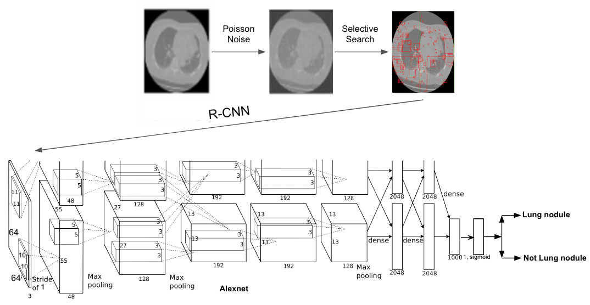

| Paper PDF |

|
In the United Staes, Lung cancer is the second most common cancer and the leading cause of cancer death. While at the distant stage, the survival rate is only 6%, it increases up to 61% at the localizd stage which is ten times higher. Therfore, the early detection is a cornerstone for a patient's survival. Moreover, CT uses X-rays that are ionizing radiation. It is required to reduce radiation dose to decrease risk of CT. If a radiation dose is reduced, the quality of ct scan image will be lowered. In the project, we present a computer-aided detecting system that classifies lung nodules from CT scanned images with Poisson noise to simulate low radiation dose CT scan. The data used for the project is LIDC/IDRI dataset (screened by LUNA16 challenge). The CT scanned image is randomly cropped using selective search. Since there were too many images without a lung nodule, to balance the number, positive case images are manually cropped. They are resized into 64x64 to put into R-CNN with Alexnet. The network is first trained with the images from the dataset for the binary classification. For both normal images and Poisson noise images, high accuracies of classification are obtained. After that, the physical layer is added to apply Poisson noises to the images to test the model with low-quality images. For the localization, faster R-CNN with ResNet 50 is used for the model.
|
| Paper: |
Code and Data:
|